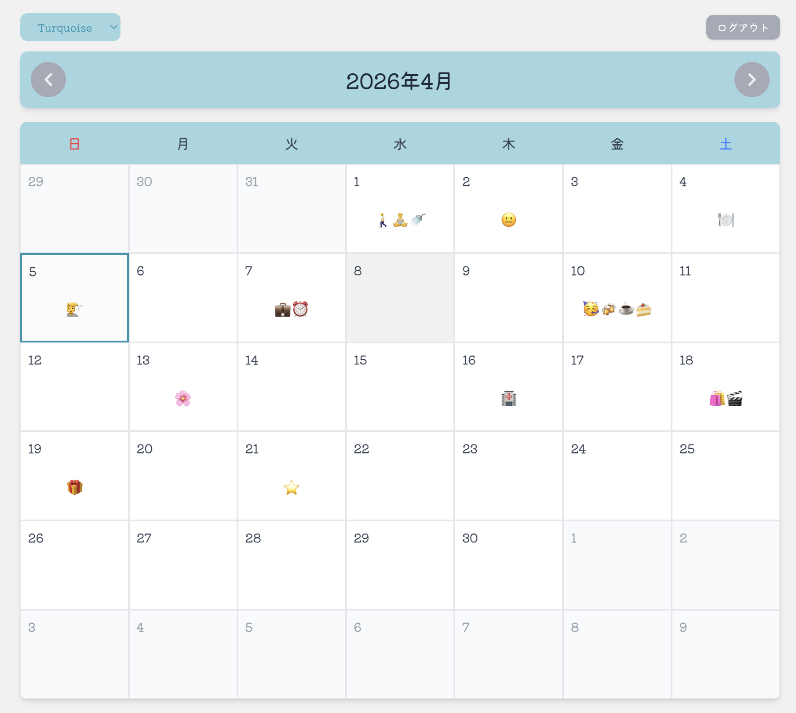
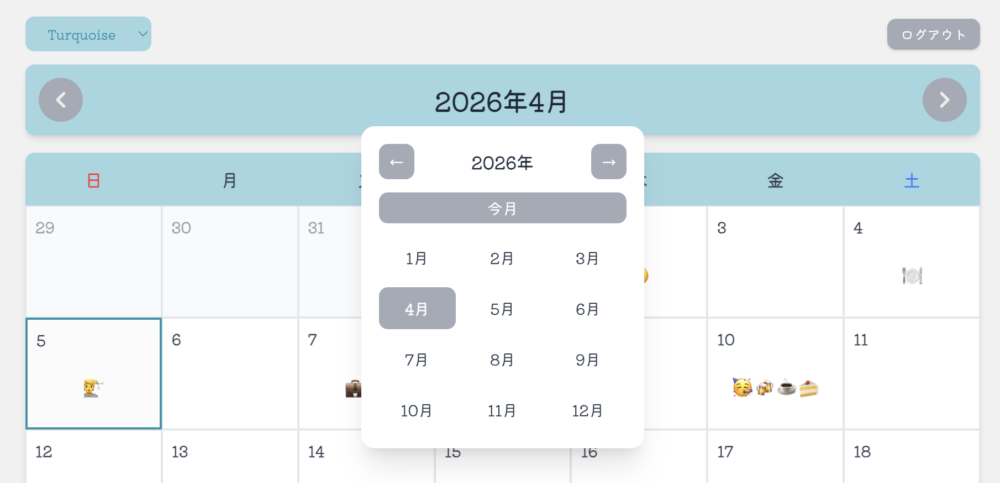
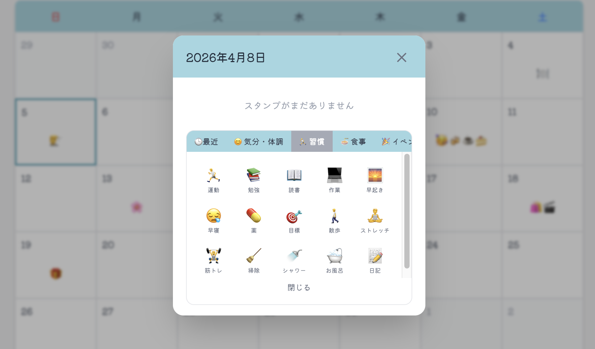
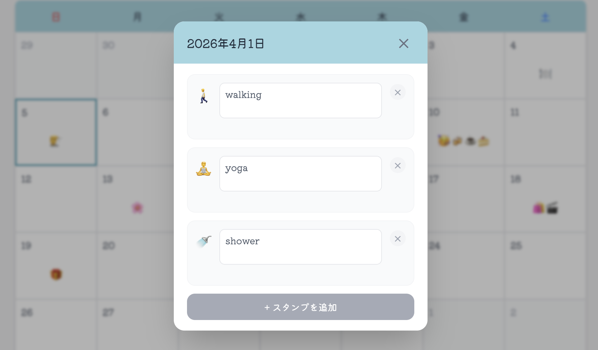
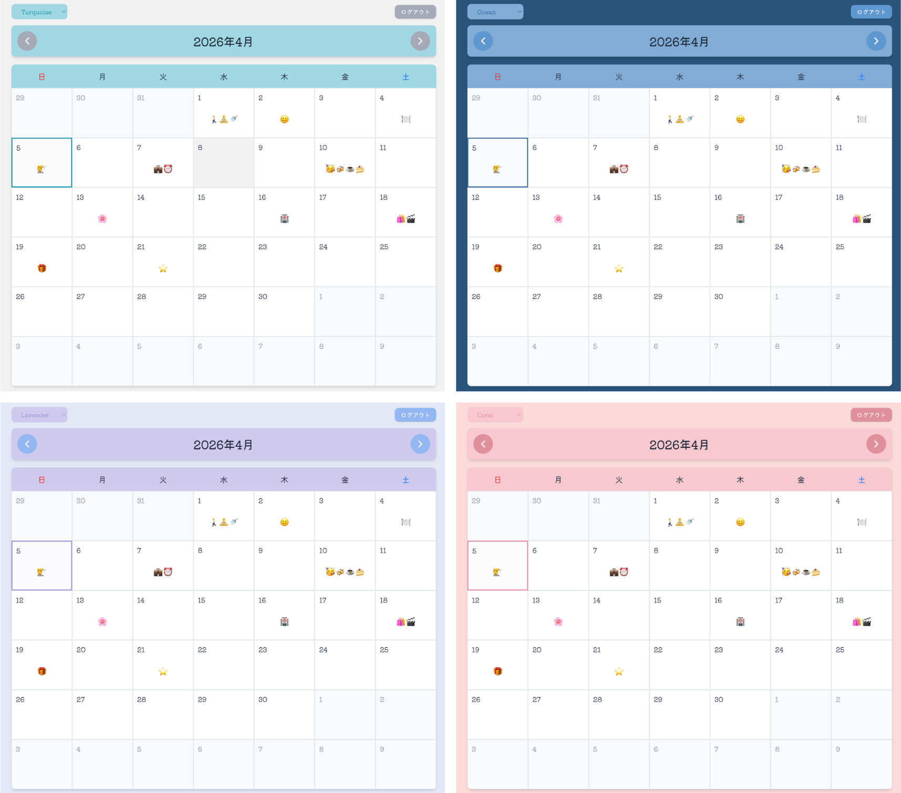
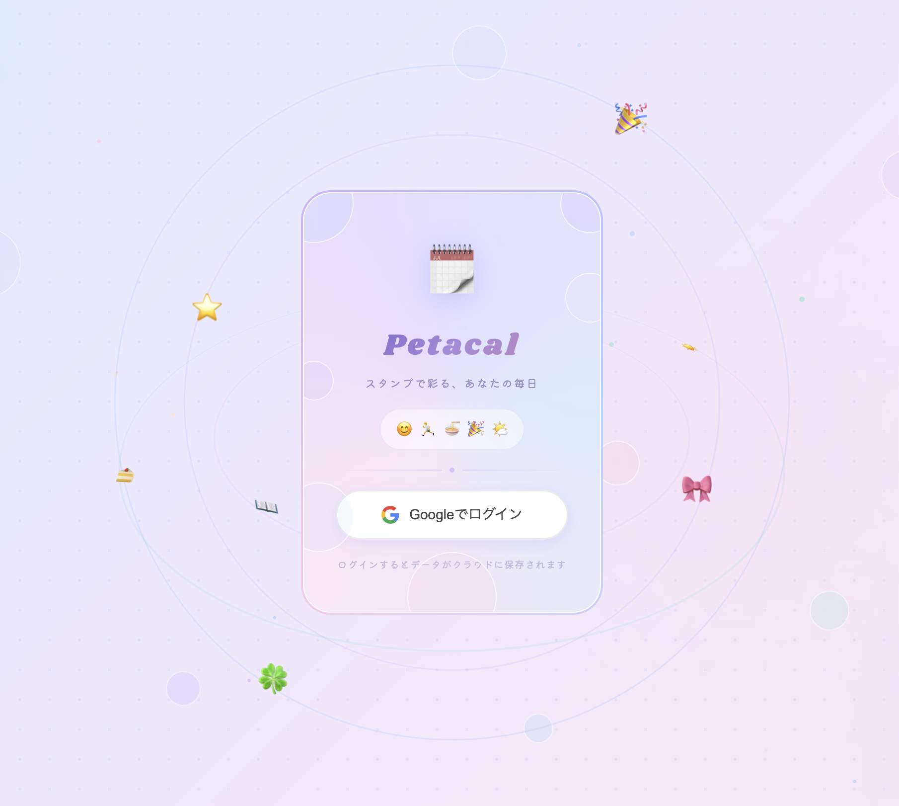

目次
- はじめに
- 完成したもの
- 技術スタック
- カレンダーUIを作る
- スタンプ機能
- Supabase導入
- セキュリティ: コメントをAES-GCMで暗号化する
- UI/UXのこだわりポイント
- セキュリティヘッダーの追加
- ハマりポイント・学んだこと
- まとめ
はじめに
こんにちはこんばんは。イノウエです。
突然ですが最近のカレンダーアプリって、分単位で時間を設定する前提の作りになっているものが多いですよね。（本当に突然すぎる）
「14:00〜15:00 会議」みたいな使い方には便利なんですが、
「今日映画見た」「なんか調子悪い日だった」
みたいなゆるい記録を残したいときには、ちょっと仰々しい感じがしていました。
そこで、スタンプをペタペタ貼るだけでざっくり予定を把握したり、日記のような感覚で記録を残せるカレンダーアプリを作ることにしました。
「Petacal（ペタカル）」という名前です。
スタンプをペタッと貼れるカレンダー、略して Petacal。
（『ペタッとカレンダー Petacal』というリズム感のいい宣伝文句を思いついたのですが、どこにも披露する場所がなく現在お蔵入りとなっています。）
この記事では、設計から実装・セキュリティ対応まで、開発の全工程をまとめます。
URL: https://petacal.vercel.app/
GitHub: https://github.com/Inoue-KK/petacal
完成したもの
現時点での実装内容は以下です。
（今後の改修で変更の可能性ありです。）

- 月単位でスタンプを貼れるカレンダー
- 4種類のカラーテーマ切り替え
- スタンプごとにコメントを残せる
- コメントは AES-GCM で暗号化してDBに保存
- Google OAuth でログイン、データはユーザーごとに分離
- スマホ・PC 両対応のレスポンシブデザイン
技術スタック
| 分類 | 技術 |
|---|---|
| フレームワーク | Next.js 15 |
| 言語 | TypeScript |
| スタイリング | Tailwind CSS v4 |
| 状態管理 | React Context API |
| DB / 認証 | Supabase（PostgreSQL + Google OAuth） |
| デプロイ | Vercel |
普段の業務は Angular + RxJS なので React の勉強をしてみたくて、それを優先した構成になってます。
モダンな Next.js + Supabase 構成を一から組んでみたかったのも、この構成を選択した動機の一つです。
カレンダーUIを作る
カレンダーの基本設計
月表示のカレンダーを作りました。ポイントは 6週固定のグリッドです。
月によって週数が変わると UI の高さがガタつくので、前月・翌月の日付を薄く表示して常に 6行 42マスを埋めるようにしています。
// Calendar.tsx（カレンダーグリッドの組み立て）
const daysInMonth = getDaysInMonth(year, month);
const firstDayOfWeek = getFirstDayOfMonth(year, month);
const totalCells = 42; // 6 weeks x 7 days
const cells: CalendarCell[] = Array.from({ length: totalCells }, (_, i) => {
const dayOffset = i - firstDayOfWeek + 1;
// 前月の日付
if (dayOffset <= 0) {
const prevMonth = month === 1 ? 12 : month - 1;
const prevYear = month === 1 ? year - 1 : year;
const prevMonthDays = getDaysInMonth(prevYear, prevMonth);
return { day: prevMonthDays + dayOffset, isPrevMonth: true, isCurrentMonth: false, isNextMonth: false };
}
// 翌月の日付
if (dayOffset > daysInMonth) {
return { day: dayOffset - daysInMonth, isPrevMonth: false, isCurrentMonth: false, isNextMonth: true };
}
// 当月の日付
return { day: dayOffset, isPrevMonth: false, isCurrentMonth: true, isNextMonth: false };
});
getDaysInMonth と getFirstDayOfMonth は utils/date.ts に切り出した関数で、それぞれ月の日数と月初の曜日（0=日曜）を返します。
今日のハイライトは new Date() で取得した年月日と比較して実現しています。
前月・次月への移動とURLクエリパラメータ
月の移動はシンプルな加減算で実装しましたが、リロードすると今月に戻ってしまう問題がありました。
そこで、表示月を /calendar?year=2025&month=11 のようにURLクエリパラメータに持たせることで解決しました。
Next.js の useSearchParams と useRouter を使って、月を変えるたびに URL を更新します。
ブラウザの「戻る」ボタンも自然に機能するようになります。
また、年月のヘッダー部分をクリックすると年月選択のポップアップが表示されるようにしました。
遠い月に飛ぶときに便利です🚀🌕

スタンプ機能
スタンプの種類
6カテゴリ・計94種類定義しています。
スタンプを使うと「最近使ったスタンプ」カテゴリも表示されます。

| カテゴリ | 例 |
|---|---|
| 🕒 最近 | 直近で使ったスタンプ（最大 10件） |
| 😊 気分・体調 | ハッピー、まあまあ、普通、体調不良、疲労… |
| 🏃 習慣 | 運動、勉強、読書、早起き、筋トレ、掃除… |
| 🍜 食事 | 自炊、外食、カフェ、スイーツ、ダイエット… |
| 🎉 イベント | 記念日、旅行、お出かけ、映画、ライブ… |
| 🌤 天気・季節 | 晴れ、雨、雪、花見、花火、クリスマス… |
| 🔖 マーク | 星、ハート、月、花、チェック、締め切り… |
将来的には SVG オリジナルスタンプに変えたいと思っていますが、素材準備が大変なので現状は絵文字で実装しています。
詳細モーダルの設計
日付をクリックすると「日付詳細モーダル」が開きます。
- 貼られているスタンプの一覧表示
- 各スタンプへの個別コメント入力
- スタンプの削除ボタン
- 「スタンプを追加」ボタンでスタンプ選択パネルを展開
最初はスタンプ選択だけのシンプルなモーダルでしたが、コメント機能を追加したタイミングで大幅に作り直しました。

カテゴリータブの横スクロール
スタンプ選択パネルのカテゴリータブは、マウスホイールで横スクロールできるようにしました。
スタンプグリッドの高さは固定にして、カテゴリー切り替え時にモーダルのサイズがガタつかないようにしています。
スタンプの制限
1日あたり最大 4枚までという制限を設けています。
- 上限に達したスタンプはグレーアウト
- 重複スタンプは選択不可
Supabase導入
テーブル設計
-- 日付データ
create table day_data (
id uuid primary key default gen_random_uuid(),
user_id uuid references auth.users not null,
date date not null,
created_at timestamptz default now(),
unique (user_id, date)
);
-- スタンプデータ
create table stamps (
id uuid primary key default gen_random_uuid(),
day_data_id uuid references day_data(id) on delete cascade not null,
stamp_id text not null, -- "mood_great" など
comment text, -- 暗号化されたコメント
sort_order int not null default 0,
created_at timestamptz default now()
);
-- インデックス
create index on stamps(day_data_id);
create index on day_data(user_id);
stamps テーブルには emoji や label カラムを持たせず、stamp_id だけ保存しています。
スタンプの定義はアプリ側のマスターデータ（stamps.ts）で管理し、表示時にルックアップする方式です。
スタンプデザインを変更しても DB のデータに影響が出ないので、この構成にしました。
RLSポリシー
ユーザーごとのデータ分離は Row Level Security（RLS）で実現しています。
-- day_data: 自分のデータのみ操作可能
create policy "own data only" on day_data
for all using (auth.uid() = user_id);
-- stamps: 自分のday_dataに紐づくスタンプのみ
create policy "own stamps only" on stamps
for all using (
exists (
select 1 from day_data
where day_data.id = stamps.day_data_id
and day_data.user_id = auth.uid()
)
);
カスタムフック useCalendarData
Supabase とのデータやり取りは useCalendarData カスタムフックに切り出しました。コンポーネント側はこのフックが返す関数を呼ぶだけです。
const { calendarData, syncing, addStamp, deleteStamp, updateComment } = useCalendarData(userId, year, month);
useCallback でメモ化して、不要な再レンダリングを防いでいます。
楽観的更新とロールバック
addStamp や deleteStamp は、Supabase へのリクエストが完了するのを待たずに、まずローカルの状態を更新します。
// addStamp の流れ（簡略）
setCalendarData(newData); // 先にUIを更新
try {
await supabase.from('stamps').insert({ ... });
} catch {
setCalendarData(calendarData); // 失敗したら元の状態に戻す
}
ボタンを押した瞬間にスタンプが反映されるので、通信待ちのもたつき感がなくなります。
エラー時は保存前の状態に戻すので、DB と UI がズレることもなくいい感じです！
スタンプ全削除時の orphan レコード削除
スタンプを全部削除したとき、親の day_data レコードが不要になります。
stamps テーブルには on delete cascade を設定しているので、day_data を消せば stamps も連鎖削除されます。
const deleteStamp = async (date: string, stampId: string) => {
// ... stamps を削除
// スタンプが0枚になったらday_dataも削除
const { count } = await supabase
.from('stamps')
.select('*', { count: 'exact', head: true })
.eq('day_data_id', dayDataId);
if ((count ?? 1) === 0) {
await supabase.from('day_data').delete().eq('id', dayDataId);
}
};
セキュリティ: コメントを AES-GCM で暗号化する
なぜ暗号化するか
コメントには「体調が悪かった」「気分が落ちた」などプライベートな内容が入ります。
RLS でアクセス制御はしていますが、DB を直接参照できる管理者（つまり私）には平文が見えてしまいます。
もちろん特別なことがない限り見ることはないのですが、利用者目線からすると「見られる状態にある」というのは嫌だよなぁと。
そこで、コメントをクライアントサイドで暗号化してから DB に保存するようにしました。
ただし、今回の実装では暗号鍵を userId から導出していて、userId 自体は DB に平文で保存されています。そのため、DB にフルアクセスできる管理者が本気で復号しようとすれば技術的には可能です。
「管理者が暗号文を気軽に覗ける状態をなくす」「DB が部分的に漏洩したときのリスクを下げる」という目的での暗号化と理解してもらえると正確です🙇♀️
実装
Web Crypto API を使って、AES-GCM 方式で暗号化しています。
// utils/crypto.ts
const PBKDF2_ITERATIONS = 100000;
// ユーザーIDとランダムなsaltからPBKDF2で鍵を派生
async function deriveKey(userId: string, salt: Uint8Array): Promise<CryptoKey> {
const raw = new TextEncoder().encode(userId);
const base = await crypto.subtle.importKey('raw', raw, 'PBKDF2', false, ['deriveKey']);
return crypto.subtle.deriveKey(
{ name: 'PBKDF2', salt, iterations: PBKDF2_ITERATIONS, hash: 'SHA-256' },
base,
{ name: 'AES-GCM', length: 256 },
false,
['encrypt', 'decrypt']
);
}
// 暗号化: salt(16B) + iv(12B) + ciphertext をバイナリ連結して1つのBase64文字列で返す
export async function encryptComment(text: string, userId: string): Promise<string> {
if (!text) return '';
const salt = crypto.getRandomValues(new Uint8Array(16));
const iv = crypto.getRandomValues(new Uint8Array(12));
const key = await deriveKey(userId, salt);
const cipher = await crypto.subtle.encrypt(
{ name: 'AES-GCM', iv },
key,
new TextEncoder().encode(text)
);
const combined = new Uint8Array(salt.byteLength + iv.byteLength + cipher.byteLength);
combined.set(salt, 0);
combined.set(iv, salt.byteLength);
combined.set(new Uint8Array(cipher), salt.byteLength + iv.byteLength);
return btoa(String.fromCharCode(...combined));
}
// 復号: 失敗したら元の文字列をそのまま返す
export async function decryptComment(encrypted: string, userId: string): Promise<string> {
if (!encrypted) return '';
try {
const combined = Uint8Array.from(atob(encrypted), c => c.charCodeAt(0));
const salt = combined.slice(0, 16);
const iv = combined.slice(16, 28);
const cipher = combined.slice(28);
const key = await deriveKey(userId, salt);
const decrypted = await crypto.subtle.decrypt({ name: 'AES-GCM', iv }, key, cipher);
return new TextDecoder().decode(decrypted);
} catch {
return encrypted;
}
}
ポイントは3点です。
- salt をランダム生成
毎回異なる salt を使うことで、同じ内容でも毎回異なる暗号文になります - 鍵は PBKDF2 で派生
ユーザーID を元にした鍵なので、DB が漏洩しても他ユーザーの鍵では復号できません - バイナリ連結
salt + iv + 暗号文を1つのバイト列にまとめて単一の Base64 文字列として保存します。
復号時はバイトオフセットでそれぞれを切り出します
UI/UXのこだわりポイント
テーマシステム
4種類のカラーテーマを実装しました。
| テーマ | イメージ |
|---|---|
| Turquoise | さわやかなターコイズブルー |
| Ocean | 深みのあるオーシャンブルー |
| Coral | あたたかいコーラルピンク |
| Lavender | やさしいラベンダー |
テーマは Context API で管理し、localStorage に保存しています。
Dropdown でリアルタイムに切り替えられ、全コンポーネントに動的カラーが適用されます。

ログイン画面
ちょっと凝ったログイン画面にしました。
絵文字がぐるぐるしてるのがちょっとシュールでじわります。

- 絵文字スタンプが3D軌道でぐるぐる回るアニメーション
- シャボン玉・キラキラパーティクルのエフェクト
- グラスモーフィズムのカード
- レインボーボーダーアニメーション
- Shrikhandフォントでタイトル表示
軌道アニメーションで一番悩んだのが「リングが回っても絵文字が傾かないようにする」ことでした。
リングを rotate(360deg) で回すと、乗っている絵文字もいっしょに回転して斜めになってしまいます。
これを防ぐため、絵文字側にリングと逆方向・同じ速度の counter-rotate アニメーションを当てることで、公転しながらも向きをキープしています。
/* リングが 30s で時計回り → 絵文字は 30s で反時計回り */
@keyframes orbitA { from { transform: rotate( 0deg) } to { transform: rotate( 360deg) } }
@keyframes cntA { from { transform: rotate( 0deg) } to { transform: rotate(-360deg) } }
3D軌道（C/D）は rotateX(60deg) で傾けているので、絵文字側で rotateX(-60deg) も打ち消す必要があって、そこがちょっと面倒でした。
軌道ごとに速度を変えて（15s / 20s / 30s / 40s）、動きがランダムっぽく見えるようにしています。
絵文字サイズの自動調整
カレンダーのマス目に表示するスタンプの絵文字は、clamp() でサイズを指定しています。
style={{ fontSize: "clamp(0.6rem, 2.5vw, 1.125rem)" }}
clamp(最小, 推奨, 最大) と書くと、ウィンドウ幅に応じてサイズが自動で変わります。
スマホでは小さく、PCでは大きく、でも大きくなりすぎない…これがメディアクエリなしの1行で実現できます。
4枚スタンプを並べても崩れないようにしたくて調べているときに知ったのですが、こんな便利なプロパティがあったとは、という感じでした💡
ポップアップの外クリック閉じ
年月選択のポップアップは、外側をクリックしたら閉じるようにしています。
よくある実装は useEffect で document.addEventListener('click', ...) を登録する方法ですが、もっとシンプルなやり方があります。
{open && (
<>
{/* 全画面の透明 div をポップアップの後ろに敷く */}
<div className="fixed inset-0 z-10" onClick={() => setOpen(false)} />
<div className="absolute z-20 ...">
{/* ポップアップ本体 */}
</div>
</>
)}
fixed inset-0 で画面全体を覆う透明な div を置いて、クリックされたら閉じるだけです。
ポップアップ本体は z-20 にして overlay の上に乗せることで、ポップアップ内のクリックは素通りします。
useEffect を書かなくていいのでクリーンアップの書き忘れもなく、コードがすっきりするのが気に入っています。
コメント保存の debounce
コメント入力欄はキー押下ごとに DB へ保存すると、1文字入力するたびに保存リクエストが走ってしまいます。そこで 500ms の debounce をかけて、入力が落ち着いてから保存するようにしました。
最初は useEffect の依存配列に comment を入れる方式で書いていたのですが、マウント時にも発火してしまうという問題がありました。
コンポーネントが表示された瞬間にも「保存中…」が走るのは明らかに変なので、useRef でタイマーを管理する方式に変えました。
// StampComment コンポーネント内
const [comment, setComment] = useState(stamp.comment);
const [saveStatus, setSaveStatus] = useState<'idle' | 'saving' | 'saved'>('idle');
const debounceTimer = useRef<ReturnType<typeof setTimeout> | null>(null);
const handleChange = (value: string) => {
setComment(value);
setSaveStatus('saving');
if (debounceTimer.current) clearTimeout(debounceTimer.current);
debounceTimer.current = setTimeout(() => {
onUpdateComment(stamp.id, value);
setSaveStatus('saved');
setTimeout(() => setSaveStatus('idle'), 2000);
}, 500);
};
useRef はレンダリングをまたいでも値が保持されるので、タイマーIDの管理にぴったりです。
「保存中…」「✓ 保存済み」のステータスも表示してフィードバックを返しています。
セキュリティヘッダーの追加
next.config.ts で HTTPセキュリティヘッダーを設定しています。
const securityHeaders = [
{ key: 'X-Frame-Options', value: 'DENY' },
{ key: 'X-Content-Type-Options', value: 'nosniff' },
{ key: 'Referrer-Policy', value: 'strict-origin-when-cross-origin' },
{
key: 'Strict-Transport-Security',
value: 'max-age=63072000; includeSubDomains'
},
{
key: 'Permissions-Policy',
value: 'camera=(), microphone=()'
},
];
X-Powered-By ヘッダーは poweredByHeader: false で削除、console.error は開発環境以外では出力しないようにしています。
ハマりポイント・学んだこと
useEffect の依存配列
カスタムフック内で関数を useEffect の依存配列に入れると、レンダリングのたびに関数が再生成されて無限ループになりました。
useCallback でメモ化して解決しました。
const fetchData = useCallback(async () => {
// ...
}, [supabase, userId]);
useEffect(() => {
fetchData();
}, [fetchData]);
Supabase クライアントの初期化
レンダリングのたびに createClient() が呼ばれると接続がいくつも張られてしまいます。
useMemo でメモ化して一度だけ生成するようにしました。
const supabase = useMemo(() => createClient(url, key), []);
upsert で「あれば取得・なければ作成」を1クエリにまとめる
スタンプを追加するとき、その日の day_data レコードが存在するかどうかを事前にチェックしていません。
代わりに upsert を使って、「なければ INSERT、あれば既存レコードを返す」を1クエリで済ませています。
const { data: dayData } = await supabase
.from('day_data')
.upsert(
{ user_id: userId, date: isoDate },
{ onConflict: 'user_id,date' }
)
.select()
.single();
onConflict に unique 制約のカラムを指定することで、重複時は既存レコードをそのまま返してくれます。
「まず SELECT して存在確認 → なければ INSERT」という2クエリのパターンと違って、シンプルかつレースコンディションにも強い書き方なので、Supabase を使うときに積極的に使いたいパターンだと思いました。
Next.js の SSR で localStorage が使えない
テーマの初期値を localStorage から読もうとしたら、サーバー側でエラーになりました。
Next.js はサーバーサイドでも JavaScript を実行するのですが、localStorage はブラウザにしか存在しないので、そのまま呼ぶとクラッシュします🥲
const [theme, setTheme] = useState<Theme>(() => {
if (typeof window === "undefined") return "turquoise"; // SSR時はデフォルト値を返す
return (localStorage.getItem("theme") as Theme) || "turquoise";
});
typeof window === "undefined" でサーバー実行かどうかを判定して、SSR 時はデフォルト値を返すようにしました。
Next.js で localStorage を扱うときの定番パターンらしく、知っておくと便利です🔍✨
Google OAuth のコールバック処理
Supabase で Google ログインを実装したとき、/auth/callback という Route Handler が必要でした。
Google の認証画面から戻ってくるとき、URL に ?code=... というパラメータが付いてきます。
これをそのまま使うわけではなく、Supabase のセッションに変換する処理が必要で、それを担当するのがこのファイルです。
// app/auth/callback/route.ts
export async function GET(request: Request) {
const code = new URL(request.url).searchParams.get("code");
if (code) {
const supabase = createServerClient(...);
await supabase.auth.exchangeCodeForSession(code); // code → セッションに変換
}
return NextResponse.redirect(`${origin}/`);
}
最初このファイルの存在を知らずに実装していたので、ログインボタンを押してもずっと何も起きない謎の状態になりました。
ドキュメントを読み返して「あ、これが必要なのか！」と。
これは PKCE（Proof Key for Code Exchange）という OAuth のフローで、認可コードをクライアントに直接渡さずサーバーサイドでセッションに交換することで、セキュリティを高める仕組みです。
「なんでコールバック用のファイルが要るんだろう」と思ったときに知ることができてよかったです。
RLS を有効にしたまま開発する
「なんかデータが取れない…」と思ったら、RLS が効いていてアクセスが弾かれていた、というのが何度かありました。
開発中は service_role キーを使って RLS をバイパスするのが便利ですが、本番には絶対に service_role キーを出さないよう注意が必要です⚠️
まとめ
「スタンプを貼るだけ」というシンプルな体験にこだわりながら、セキュリティやデータ設計も一通り考えた個人開発でした。
Web Crypto API は今回初めて触ったので、趣味アプリでここまでやる必要があるかは微妙（だとAIに言われた…）ですが、いい勉強になりました。
今後やりたいこととしては、絵文字からオリジナル SVG スタンプへの刷新や、ユーザーが自分でスタンプをアップロードできる機能などなど…色々考えてます🌟
細かい時間管理はせず、気軽にざっくり使えるカレンダーとして育てていけたらと思っています🌱
こちらのブログは個人開発の記録やアウトプットの一環として執筆しております。
内容に誤りがある可能性がありますのでご了承ください。